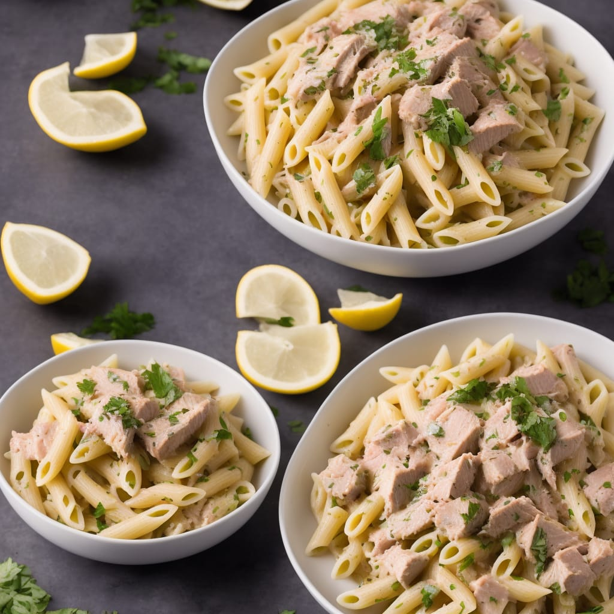

<< back
Tuna Alfredo with Penne Pasta
This family invention is a favorite. It's quick, easy and only
requires three core ingredients. The entire family loves this meal and
always come running when they know this is being served. Serve with
broccoli or fresh salad and garlic bread on side.

- Prep Time
- 10 mins
- Cook Time
- 16 mins
- Servings
- 4
Ingredients
- 1 cup penne pasta
- 24 ounces tuna, drained
- 1 teaspoon onion powder
- 1 pinch salt
-
1 (16 ounce) jar Alfredo sauce
-
2 ounces grated Parmesan cheese
Steps
-
Bring large pot of water to a
boil
-
Cook penne according to package
instructions
-
Place tuna in
skillet over low heat
-
Season tuna with onion powder and
salt
-
Cook tuna until lightly browned,
about 5 minutes
-
Stir tuna into cooked
pasta,
add Alfred
sauce
-
Garnish with grated Parmesan cheese
- Enjoy